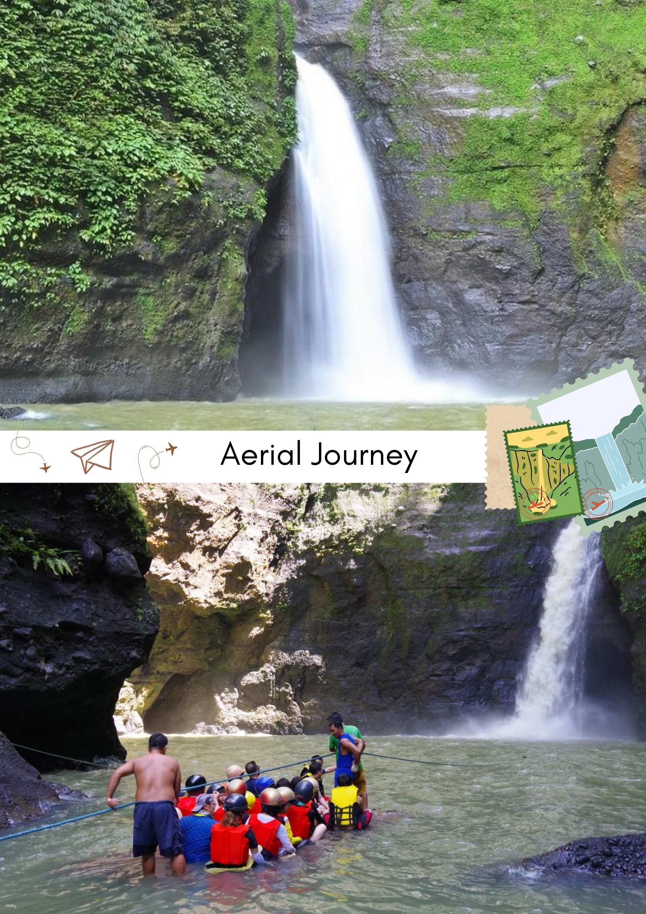
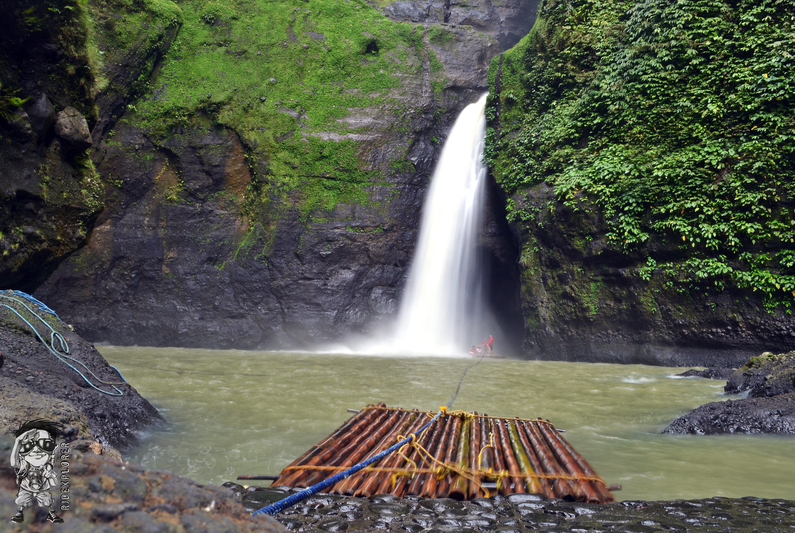

Pagsanjan Falls
Feel the adrenaline as you shoot the rapids on a thrilling banca (canoe) ride to the majestic Pagsanjan Falls. This natural wonder in Laguna is a spectacle of cascading water and lush greenery. You can swim under the falls, enter the mystical "Devil's Cave," or simply enjoy the serenity of the surroundings. This is more than just a waterfall; it's an adventure you'll never forget!

